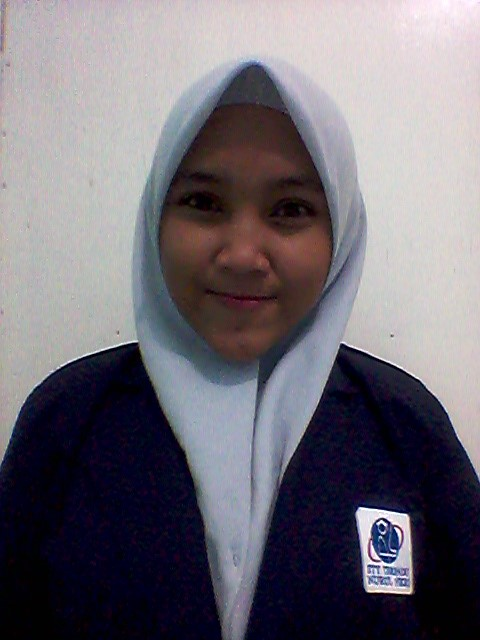

Daftar Riwayat Hidup

Nama : Neni Nurhaeni
Tempat, Tanggal Lahir : Indramayu, 19 November 2001
Jenis Kelamin : Perempuan
Agama : Islam
Kewarganegaraan : Indonesia
Status : Pelajar/Mahasiswa
Berat/Tinggi Badan : 50kg / 156cm
Alamat : Desa.Sukamelang, Blok.Gadel, RT.10, RW.02, Kec.Kroya, Kab.Indramayu-Jawa Barat
Kode Pos : 45265
No.HP : 083823219069
Email : neninurhaeni4051@gmail.com
Latar Belakang Pendidikan
| Tahun | Tempat Pendidikan |
|---|---|
| 2008-2013 | SD Negeri Sukamelang 2 |
| 2013-2016 | SMP Negeri 1 Gabuswetan |
| 2017-2019 | SMK Muhammadiyah Kandanghaur |
| 2019-Sekarang | STT Terpadu Nurul Fikri |
Keahlian Personal
1. Management
2. Keahlian Komputer (MS.Office)